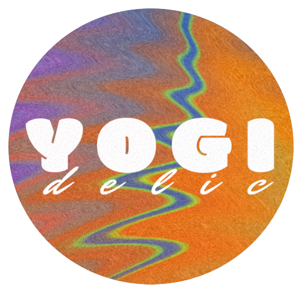

NEXT GATHERING · SUNDAY NOV 1
soft sunday:
a deep rest ritual
with Dre + Maya
come as you are · pay what you can
FOR MORE DETAILS →
MOVEMENT · MINDFULNESS · BREATH · REST
a deep rest ritual
A guided practice of movement, breath and stillness for deep rest, embodied attention and a softer transition into the week ahead.
FOR MORE DETAILS →Sunday · Nov 1
CURRENT + UPCOMING YOGIDELIC OFFERINGS
NEXT GATHERING · SUNDAY NOV 1
with Dre + Maya
come as you are · pay what you can
FOR MORE DETAILS →SOFT SUNDAY
An open, low-pressure space to move, breathe, rest and practice being with yourself as you are.
FOLLOW @YOGIDELIC →MEET DRE
for seven years, i’ve taught yoga and mindfulness in Nashville, often in community spaces and alongside people who didn’t always see themselves reflected in the wellness world. our practice became less about forcing bodies into poses and more about asking: what would feel most supprotive here?
over time, that became the heart of Yogidelic: movement, meditation and deep rest shaped around the person in front of me. the practice is designed with choice and different bodies in mind, a reflection of the community that shaped my guidance. it’s about learning to trust your own inner compass, befriending your body, and making space to meet yourself as you already are.
MORE FROM YOGIDELIC →BRING A DEEP REST RITUAL TO
a Deep Rest Ritual can be hosted at your studio, gallery, community space, retreat or private event. Let’s create a restful experience together, designed with care for your community.
HOST INQUIRY →